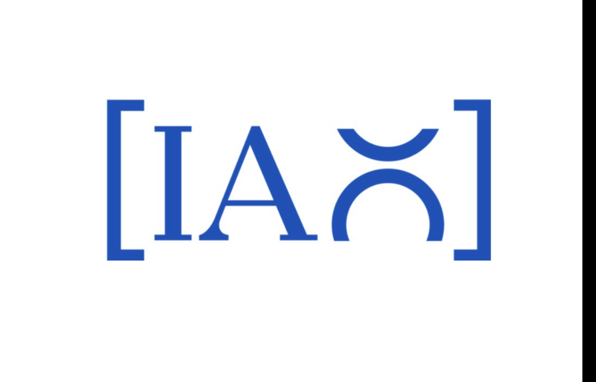
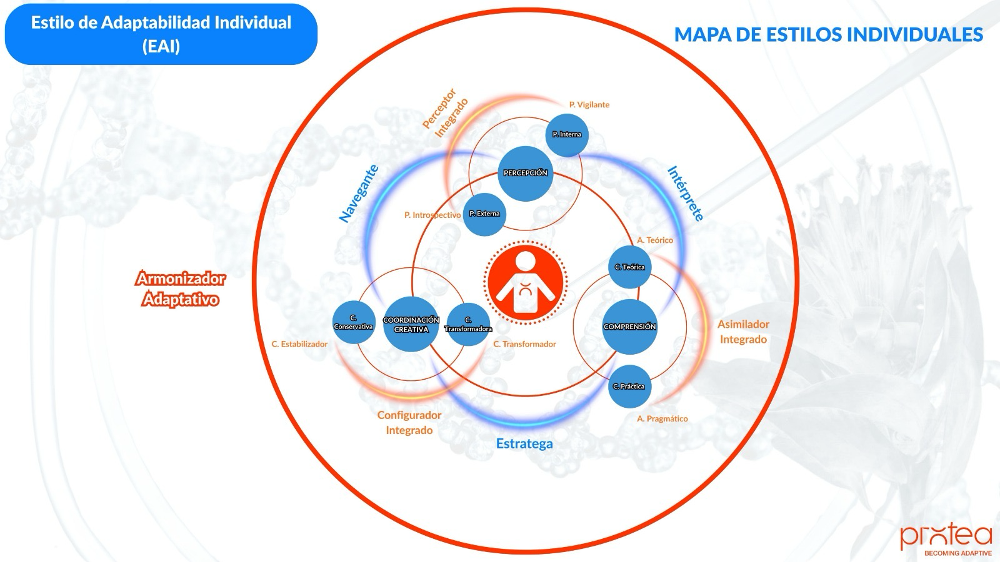

01 · Comprender
DIAGNOS · IAO
Cuando hay muchas señales, pero no una lectura compartida.
DIAGNOS hace visible el estado de la adaptabilidad. Analizamos cómo la organización anticipa, responde, aprende y evoluciona, e identificamos las fricciones que están limitando su capacidad de acción.

IAO · Índice de Adaptabilidad Organizacional
El IAO es el instrumento organizacional insignia de DIAGNOS. Ofrece una lectura clara y accionable de la capacidad adaptativa.
¿Dónde estamos?
¿Qué está limitando nuestra respuesta?
¿Dónde conviene actuar primero?

Qué recibe la organización
- Una lectura compartida.
- Un mapa de capacidades y fricciones.
- Prioridades para un Plan Adaptativo.
El IAO no termina en un informe. La lectura se traduce en un Plan Adaptativo: prioridades, decisiones e iniciativas sobre las que conviene actuar.
Conoce el IAO